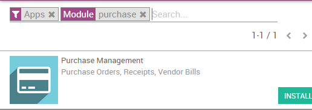

The Purchase app allows you to manage your purchase orders, to control products to receive and to control supplier bills.
If you want to get product forecasts and receptions under control, the first thing to do is to deploy the Odoo purchase process. Knowing what have been purchased is the basis of forecasting and controlling receptions.
Настройка
Install the Purchase and Inventory applications
Start by installing the Purchase application from the Apps module. This will automatically trigger the installation of the Inventory app (among others), which is required with Purchase.
Create products
Then, you need to create the products you want to purchase. Go to the Purchase app, then , and click on Create.

When creating the product, the Product Type field is important:
- Stockable & Consumable: products need to be received in the inventory.
- Services & Digital Products (only when the eCommerce app is installed): there is no control about what you receive or not.
Совет
It's always good to create a Miscellaneous product for all the products you purchased rarely and for which you don't want to manage the stocks or have purchase/sale statistics. If you create such a product, we recommend to set his product type field as Service.
Control products receptions
Purchase products
From the purchase application, create a purchase order with a few products. If the vendor sent you a sale order or a quotation, put its reference in the Vendor Reference field. This will allow you to easily do the matching with the delivery order later on (as the delivery order will probably include the Vendor Reference of his sale order).

Примечание
See the documentation page От формирования заказа поставщику до получения счета и приема товара for a full overview of the purchase process.
Receive Products
If you purchased physical goods (stockable or consumable products), you can receive the products from the Inventory application. From the Inventory dashboard, you should see a button X To Receive, on the receipt box of the related warehouse.
Click on this button and you access a list of all awaiting orders for this warehouse.

If you have a lot of awaiting orders, you can use the filter bar to search on the Vendor (also called Partner in Odoo), the product or the source document, which is the reference of your purchase order. You can open the document that matches with the received delivery order and process all the lines within it.

You may validate the whole document at once by clicking on the Validate button or you can control all products, one by one, by manually change the Done quantity (what has actually been received). When a line is green, it means the quantity received matches to what have been expected.
Примечание
If you work with lots or serial numbers, you can not set the processed quantity, but you have to provide all the lots or serial numbers to record the quantity received.
When you validate the reception, if you have received less products than the initial demand, Odoo will ask youthe permission to create a backorder.

If you plan to receive the remaining product in the future, select Create Backorder. Odoo will create a new documents for the awaiting products. If you choose No Backorder, the order is considered as fulfilled.